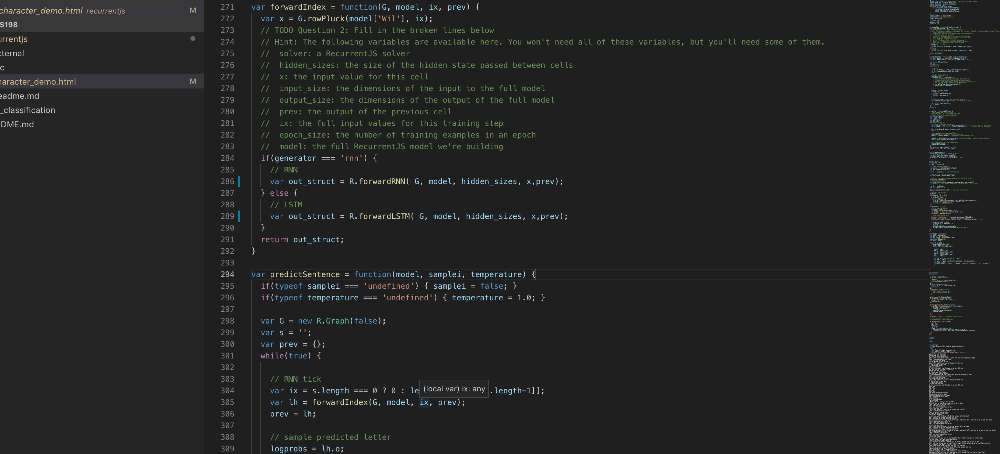
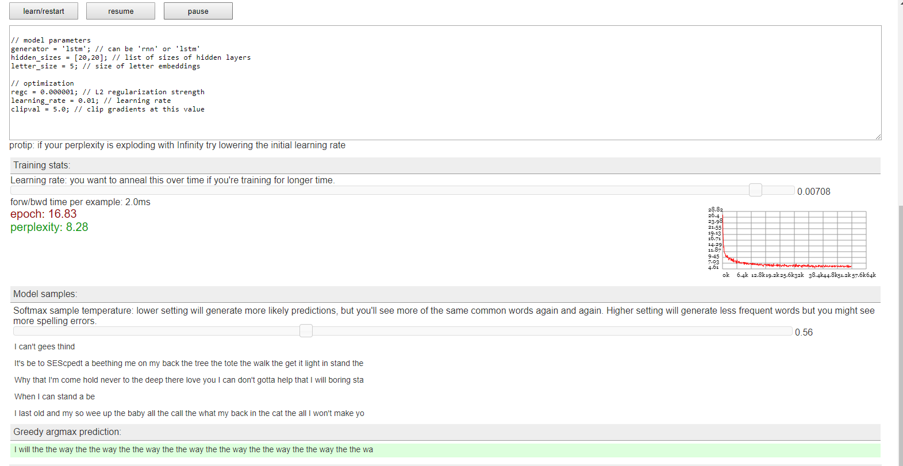
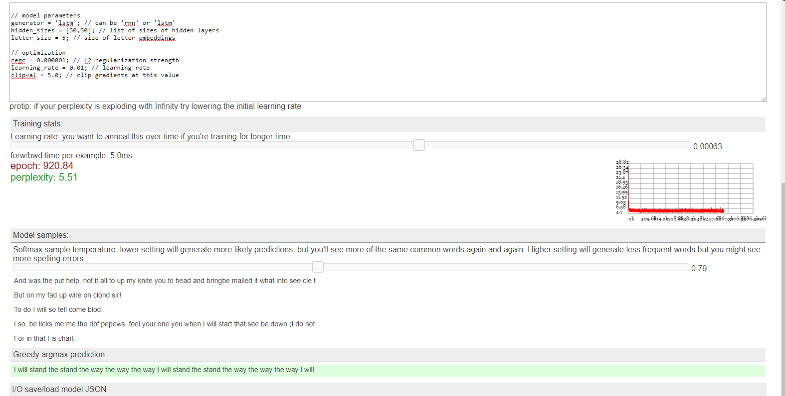

ASSIGNMENT 7 - RNN and LSTMs
1. LSTMs consist of chained, repeating modules. At a high level, what are the two pieces of information that is passed between modules?
At a high level , LSTM passes information between modules through gates. These regulate the ability of the LSTM to add or remove information to determine the cell state.
2. "LSTM" stands for "Long Short Term Memory". The name is a reference to a problem with RNNs that LSTMs are designed to solve. What is this problem? At a high level, how do LSTMs attempt to address this problem (what extra information do they add)? The problem is that RNNs have problems with long term dependencies. They can pass the information through layers but are incapable of learning. Hence, in the presence of gaps between relevant pieces of information, RNNs do not have the possibility to connect information that is not immediately recent. LSTM add a special core feature to RNNs’s similar structure, that is the cell state which through the use of three gates, regulates the information that is added or removed to the cell state that let in the end pass the information through the whole network.
3. The blog post describes two views of RNN/LSTM architectures. In one of these views, we think of the RNN as being "unrolled" into a chain of repeating modules. What values (represented with tensors) are shared between these modules, and what values are different? (The answer is slightly confusing when thinking about training, so just think about using the model for prediction.) No idea, be cause the question is confusing. Is the answer "the weights?"
4. The "forget gate layer" has four steps: A. Concatenate the previous output and current input. B. Run a normal fully connected layer (where we multiply these values by a weight matrix). C. Take the output of the fully connected layer, and run it through a sigmoid non-linearity. D. Set new_state = the output of the sigmoid non-linearity * current_state. Remember that the purpose of the "forget gate layer" is to allow the network to "forget" some of the current state. Why do you think a sigmoid non-linearity is used here instead of a ReLU nonlinearity (as we were using in most of our previous models)? Hint: look at this image visualizing sigmoid and ReLU https://goo.gl/URp7Hm. Think about the ranges of the output - what is the property of sigmoid's output range that makes it work for our purpose when we multiply with the current state vector?
Because Lstm don’t have the vanishing gradient problem that other NN have. Using Sigmoid for the gates as the activation function lets LSTMs to sustain for a long range the values before going to Zero.
Part 2 - complete the code
2.1Complete the code - Done!

2.2 - Run the model.
After 15 epochs

After 16 epochs tuning some parameters. 
After 900 + epochs ans better tuned parameters - it finally returns more coherent things. For me , setting the perplexity between 0.7 ~ 0.8 worked better in order to avoid typos and to avoid to many repetitions.
